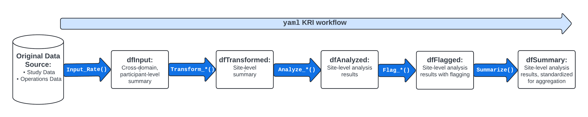

Introduction
The gsm package provides a standardized data pipeline for conducting study-level Risk Based Quality Management (RBQM) for clinical trials. There are four main types of data used in gsm:
- Raw Data - Clinical and operational data from study databases
- Mapped Data - Data that has been transformed and standardized for analysis
- Analysis Data - Data that has been analyzed to calculate Key Risk Indicators (KRIs)
- Reporting Data - Data that has been summarized and formatted for reporting
This vignette provides a high-level overview of how each type of data is used, and includes detailed data specifications as appendices.
Data Model Overview
In general, gsm is designed to be flexible and customizable, allowing users build custom data pipelines that support many types of raw study data. As shown below, raw clinical data is transformed into mapped data, which is then analyzed to calculate desired metrics. The analysis data is then combined and formatted for reporting with additional raw data, including CTMS data and gsm workflow data, which provides relevant metadata for reports.

Raw and Mapped Data
gsm is designed to work with a wide variety of clinical data sources. The raw data used in the analysis pipeline is typically sourced from clinical trial databases and is transformed into mapped data using simple transformations. Mapped data is then used as input for the analysis pipeline.
There is not a single data standard for raw or mapped data in
gsm. The only requirement is that the mapped data is
compatible with the analytics pipeline. Data Mapping transformations can
be done using multiple methods including custom R scripts (e.g., with
dplyr), SQL queries, or using gsm workflows
(e.g. the
system.file("workflow/data_mapping.yaml", package = "gsm")
file). Examples of these methods can be found in
vignette("Cookbook").
Analysis Data
In gsm analysis data is used to capture key metrics associated with the conduct of a clinical trial. As described in the gsm readme, 12 standard Key Risk Indicator (KRI) metrics are included in the package along with automated workflows that allow them to be run for all sites or countries in a study. Examples of KRIs include the rate of adverse events or amount of missing data at a site or across sites. Defining and deploying KRIs during continually monitor risks to the integrity of the trial and take corrective actions accordingly.

The image above provides an overview of the default KRI analysis pipeline. The pipeline is a standardized five-step process for assessing data issues by going from participant-level input data to a standardized site-level summary of model results. The functions used in each step of the data pipeline along with the input and output datasets are described in more detail below.
-
dfInput: Input data; Cross-domain participant-level input data with all needed data for KRI derivation. Created by theInput_Rate()function usedmappeddata as input. -
dfTransformed: Transformed data; Site-level transformed data including KRI calculation. Created byTransform_*()functions usingdfInputas input. -
dfAnalyzed: Analyzed data; Site-level analysis results data. Created byAnalyze_*()functions usingdfTransformedas input. -
dfFlagged: Flagged data; Site-level analysis results with flags added to indicate potential statistical outliers. Created by passing numeric thresholds to aFlag_*()function usingdfAnalyzedas input. -
dfSummary: Summary data; Standardized subset of the flagged data. This summary data has the same structure for all assessments and always includes both KRI and Flag values so that a user can easily look at trends for any given site across multiple assessments. Created using theSummarize()function usingdfFlaggedas input.
The data requirements for each component of the analysis pipeline are rigid; See Appendix 1 for full specifications.
Analysis Workflows
Since there are rigid data requirements for each component of the analysis data model, the analysis workflow is largely standardized. There are two main approaches to running the analysis workflow:
-
Scripted Analysis: Run each step of the analysis
pipeline individually using the functions provided in the
gsm package. This approach is useful for understanding
the data requirements and for debugging. See Example 1 in
vignette("Cookbook")for an example of this approach. -
Workflow Analysis: Run the analysis pipeline using
a YAML workflow file. This approach is useful for running the same
analysis on multiple studies or for automating the analysis process. See
Example 2 in
vignette("Cookbook")for an example of this approach.
Note that each step in these workflows can be customized based on the requirements for a specific KRI. The graphic below shows four such workflows.

More details about analysis data pipelines can be found in
vignette("DataAnalysis").
Reporting Data
A rigid Reporting Data framework is provided in {gsm} to allow for standardized reporting, visualization and meta-analysis that compare risk profiles across timepoints, and even across multiple studies. The Reporting Data sets used in {gsm} are:
-
dfResults: Summary data; Standardized subset of the flagged data. This summary data has the same structure for all assessments and always includes both KRI and Flag values so that a user can easily look at trends for any given site across multiple assessments. Created using theSummarize()function in the analytics pipeline, followed by theBindResults()function to add columns necessary for reporting and stack metrics and snapshots into a single data.frame. -
dfBounds: Bounded data; A data.frame containing predicted boundary values with upper and lower bounds across the range of observed values. Created with theMakeBounds()function. -
dfGroups: Grouped data; Long data.frame of summarized group CTMS data with site, study, and country level counts and metrics. Constructed by binding data.frames created withMakeLongMeta(). -
dfMetrics: Metric metadata; Metric-specific metadata for use in charts and reporting. Created by passing anlWorkflowobject to theMakeMetric()function.
Similar to Analysis Workflows, reporting data pipelines can be run as R scripts or as YAML workflows. Example 3 in the cookbook vignette shows how to populate the Reporting Data tables using output from the Analysis Workflows and other study data sources. The Reporting Deep Dive Vignette provides more details on the Reporting Data model.

Analytics data model
The KRI analytics pipeline is a standardized process for
Analyzing data issues by going from participant-level
input data to a standardized site-level
summary of model results. The data sets used in each step
of the data pipeline are described in detail below. When using a metric
workflow YAML to create these tables, all data tables are contained in a
list, which we call lAnalysis. This list is then fed into
the reporting data pipeline.
Analysis Data Tables
dfInput
- Function(s) used to create table:
- Inputs:
dfSubjectsdfNumeratordfDenominator
- Usage: The base data.frame for all Analysis workflows. Feeds into
the
Transform_*()functions. - Structure:
| Table | Column Name | Description | Type | Optional |
|---|---|---|---|---|
| dfInput | SubjectID | The subject ID | Character | |
| dfInput | GroupID | The group ID for the metric | Character | |
| dfInput | GroupLevel | The group type for the metric (e.g. “Site”) | Character | |
| dfInput | Numerator | The calculated numerator value | Numeric | |
| dfInput | Denominator | The calculated denominator value | Numeric | |
| dfInput | Metric | The calculated rate/metric value | Numeric |
dfTransformed
- Function(s) used to create table:
- Inputs:
dfInput - Usage: Convert from input data format to needed format to derive KRI
for an Assessment via the
Analyze_*()functions. - Structure:
| Table | Column Name | Description | Type | Optional |
|---|---|---|---|---|
| dfTransformed | GroupID | The group ID for the metric | Character | |
| dfTransformed | GroupLevel | The group type for the metric (e.g. “Site”) | Character | |
| dfTransformed | Numerator | The calculated numerator value | Numeric | |
| dfTransformed | Denominator | The calculated denominator value | Numeric | |
| dfTransformed | Metric | The calculated rate/metric value | Numeric |
dfAnalyzed
- Function(s) used to create table:
- Inputs:
dfTransformed - Usage: Prepare the data for
Flag_*()by performing the specified test on the metric provided. - Structure:
| Table | Column Name | Description | Type | Optional |
|---|---|---|---|---|
| dfAnalyzed | GroupID | The group ID for the metric | Character | |
| dfAnalyzed | GroupLevel | The group type for the metric (e.g. “Site”) | Character | |
| dfAnalyzed | Numerator | The calculated numerator value | Numeric | |
| dfAnalyzed | Denominator | The calculated denominator value | Numeric | |
| dfAnalyzed | Metric | The calculated rate/metric value | Numeric | |
| dfAnalyzed | Score | The Statistical Score | Numeric | |
| dfAnalyzed | Overall Metric | Numeric | * | |
| dfAnalyzed | Factor | Numeric | * | |
| dfAnalyzed | Predicted Count | Numeric | * |
dfFlagged
- Function(s) used to create table:
Flag_Fisher()Flag_Identity()Flag_NormalApprox()Flag_Poisson()
- Inputs:
dfAnalyzed - Usage: Flag a group-level metric to be summarized via
Summarize()and used for reporting. - Structure:
| Table | Column Name | Description | Type | Optional |
|---|---|---|---|---|
| dfFlagged | GroupID | The group ID for the metric | Character | |
| dfFlagged | GroupLevel | The group type for the metric (e.g. “Site”) | Character | |
| dfFlagged | Numerator | The calculated numerator value | Numeric | |
| dfFlagged | Denominator | The calculated denominator value | Numeric | |
| dfFlagged | Metric | The calculated rate/metric value | Numeric | |
| dfFlagged | Score | The Statistical Score | Numeric | |
| dfFlagged | Flag | The ordinal Flag to be applied | Numeric | |
| dfFlagged | Overall Metric | Numeric | * | |
| dfFlagged | Factor | Numeric | * | |
| dfFlagged | Predicted Count | Numeric | * |
dfSummary
- Function(s) used to create table:
- Inputs:
dfFlagged - Usage: Summarize KRI at the group level for reporting.
- Structure:
| Table | Column Name | Description | Type | Optional |
|---|---|---|---|---|
| dfSummary | GroupID | The group ID for the metric | Character | |
| dfSummary | GroupLevel | The group type for the metric (e.g. “Site”) | Character | |
| dfSummary | Numerator | The calculated numerator value | Numeric | |
| dfSummary | Denominator | The calculated denominator value | Numeric | |
| dfSummary | Metric | The calculated rate/metric value | Numeric |
Overview of Reporting data model
Reporting Data Tables
dfResults
- Function(s) used to create table:
- Inputs:
lAnalysis,strStudyID,dSnapshotDate - Workflow used to create table:
data_reporting.yaml - Usage: Summarize KRI at the group level for reporting.
- Structure:
| Table | Column Name | Description | Type | Optional | |
|---|---|---|---|---|---|
| dfResults | GroupID | The group ID for the metric | Character | ||
| dfResults | GroupLevel | The group type for the metric (e.g. “Site”) | Character | ||
| dfResults | Numerator | The calculated numerator value | Numeric | ||
| dfResults | Denominator | The calculated denominator value | Numeric | ||
| dfResults | Metric | The calculated rate/metric value | Numeric | ||
| dfResults | Score | The calculated metric score | Numeric | ||
| dfResults | Flag | The calculated flag | Numeric | ||
| dfResults | MetricID | The Metric ID | Character | * | |
| dfResults | StudyID | The Study ID | Character | * | |
| dfResults | SnapshotDate | The Date of the snapshot | Date | * |
dfBounds
- Function(s) used to create table:
MakeBounds()-
Analyze_NormalApprox_PredictBounds()(called withinMakeBounds())
- Inputs:
lAnalysis,strStudyID,dSnapshotDate - Workflow used to create table:
data_reporting.yaml - Usage: Calculates predicted percentages/rates and upper- and lower-bounds across the full range of sample sizes/total exposure values for reporting.
- Structure:
| Table | Column Name | Description | Type | Optional | |
|---|---|---|---|---|---|
| dfBounds | Threshold | The number of standard deviations that the upper and lower bounds are based on | Numeric | ||
| dfBounds | Denominator | The calculated denominator value | Numeric | ||
| dfBounds | LogDenominator | The calculated log denominator value | Numeric | ||
| dfBounds | Numerator | The calculated numerator value | Numeric | ||
| dfBounds | Metric | The calculated rate/metric value | Numeric | ||
| dfBounds | MetricID | The Metric ID | Character | ||
| dfBounds | StudyID | The Study ID | Character | ||
| dfBounds | SnapshotDate | The Date of the snapshot | Date |
dfGroups
- Function(s) used to create table:
MakeLongMeta()bind_rows()
- Inputs: CTMS site, study and country data
- Workflow used to create table:
data_reporting.yaml - Usage: Group-level metadata dictionary.
- Structure: Long data frame, with certain
Paramrequired for givenGroupLevel
| Table | Column | Description | Type | Optional |
|---|---|---|---|---|
| dfGroups | GroupID | Unique Group ID | Character | |
| dfGroups | GroupLevel | Group Level (e.g. Site, Country) | Character | |
| dfGroups | Param | Parameter Name (e.g. “Status”) | Character | |
| dfGroups | Value | Parameter Value (e.g. “Active”) | Character |
Expected Param by GroupLevel for use in gsm
reporting. User may add other Param values as needed.
| GroupLevel | Param | Description | Value Type |
|---|---|---|---|
| Study | Status | Study Status | Character |
| Study | ParticipantCount | # of Enrolled Participants | Numeric |
| Study | SiteCount | # of Activated Sites | Numeric |
| Site | ParticipantCount | # of Enrolled Participants | Numeric |
| Site | Status | Site Status | Character |
| Site | InvestigatorFirstName | Investigator First name | Character |
| Site | InvestigatorLastName | Investigator Last name | Character |
| Site | City | City | Character |
| Site | State | State | Character |
| Site | Country | Country | Character |
| Country | EnrolledParticipants | # of Enrolled Participants | Numeric |
dfMetrics
- Function used to create table:
MakeMetric() - Inputs:
lWorkflows- metadata for the corresponding kri(s) made withMakeWorkflowList() - Workflow used to create table:
data_reporting.yaml - Usage: Metadata used for charts and tables
- Structure:
| Table | Column Name | Description | Type | Optional | |
|---|---|---|---|---|---|
| dfMetrics | File | The YAML file for workflow | Character | ||
| dfMetrics | MetricID | ID for the Metric | Character | ||
| dfMetrics | Group | The group type for the metric (e.g. “Site”) | Character | ||
| dfMetrics | Abbreviation | Abbreviation for the metric | Character | ||
| dfMetrics | Metric | Name of the metric | Character | ||
| dfMetrics | Numerator | Data source for the Numerator | Character | ||
| dfMetrics | Denominator | Data source for the Denominator | Character | ||
| dfMetrics | Model | Model used to calculate metric | Character | ||
| dfMetrics | Score | Type of Score reported | Character |
Appendix 2 - Analysis Workflow Specifications
Assessment workflow metadata objects are passed to the
lWorkflow parameter in RunWorkflow() to define
functions and parameters across multiple studies.
The lWorkflow object is a named list of metadata and
steps defining how each assessment should be run. By default,
MakeWorkflowList() imports YAML specifications from
workflow/metrics. Each item in lWorkflow
expects the following parameters in the steps section:
-
workflow: Array defining one or more functions to be executed as part of the workflow for a given assessment-
workflow[]$meta: specifies all of the metadata information for the KRI. -
workflow[]$steps: specifies all of the steps in the workflow.-
workflow[]$steps$name: name of the gsm function. -
workflow[]$steps$inputs: specifies the required input data -
workflow[]$steps$output: specifies the output data from the workflow step, which can be used as an input in the next step in the workflow -
workflow[]$steps$params: specifies parameters to be passed to the function
-
-
For example, the default workflow for the AE assessment
(system.file("workflow/metrics/kri0001.yaml", package = "gsm"))
is shown below: